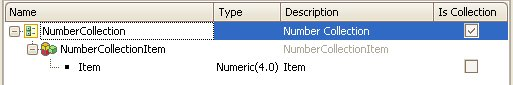

Structured Data Type editor
How and where do you define the structure of an Structured Data Type (SDT) object? By using the SDT Editor. While creating a Structured Data Type (SDT) object, you may define a multilevel structure, quite similar to the Transaction's structure. Each level can have one or more members. These members may be classified into:
In this article you will find:
Simple ElementsWhile defining a member in a Structured Data Type (SDT) object design, you must specify the following:
Look at the following image: XML PropertiesWhile working with SDTs you can define some properties related to each kind of element, in order to have control over the SDT serialization to different formats, such as XML. When working with a simple element (a member) you will see the following XML properties:
These properties allow you to have control over the XML that will be generated. XmlType Property This property may have one of the following values:
XML Namespace property Compound ElementsThey are those elements defining a new element group, a new collection, or a group of simple elements. Different bullets, in the editor, identify the compound elements: Identifies a member in an SDT. Identifies a collection Identifies a structure, a group of simple elements Compound elements have the same properties as do simple elements, but the Data Type property is not enabled. In the following example you can see a Structured Data Type named Customers with some simple and compound elements: Now look at the corresponding Properties windows:
When a substructure defines a collection, besides the data type created with the SDT name, there will be another data type created with Name.SubstructureName, and they will be selectable as data types in any variable definition. This means that the two data types will be created. Following the example, while defining variables in a procedure, you may see: Stop and take a look again at the image of the Collection properties window. Can you see the Collection Serialization property? The purpose of this property is to help solve the problem of how to serialize a collection. Its possible values are:
Different Actions over Each Kind of ElementAs any other editor, the SDT editor allows you to define actions over each kind of element by right-clicking on:
Drag and drop: You can select a Transaction from the Folder View and drop it into the SDT structure. The Transaction structure will be added to the SDT structure. Structured Data TypeBy right-clicking on a Structured Data Type you will see the following secondary menu:
Note: When you need to insert a new member in the structure, you may use the corresponding option in this secondary menu shown above, or you may also drag the attribute to the structure. Look at the following image: Another method for inserting members in the SDT structure is to use the Insert Menu from the GeneXus main toolbar.
If the focus is on the SDT structure root, the new members added with the Insert menu will be placed on the end of the structure, if the focus is on one existing member, the new member will be added immediately after the selected one. CollectionBy right-clicking on a Collection you will see the following secondary menu:
SubstructureBy right-clicking on a Substructure you will see a secondary menu quite similar to the Collection menu: MemberBy right-clicking on a Member you will see a secondary menu quite similar to the Collection menu: Examples of SDT Serialization to XML1) Suppose that you have the following SDT: You want to generate the following XML: Richard Smith So, you will need to set the following values to the corresponding properties:
2) Suppose that you have now defined an SDT like the one below: The collection may be serialized as follows:
<Country>
<Cities>
<CityName>Montevideo</CityName>
<CityName>Rocha</CityName>
...
</Cities>
</Country>
In this case, the Collection Serialization property must be specified as Wrapped Or as:
<Country>
<CityName>Montevideo</CityName>
<CityName>Rocha</CityName>
...
</Country>
In this case, the Collection Serialization property must be specified as Sequence Defining a Collection Based on Any Data TypeBy working with the SDT Editor you may define collections as shown in the following image:  However, you will not be able to define a collection based on any Data Type (Numeric, Character, another SDT data type, BC, etc). In order to solve this situation, you must work with Collection Domains, or you may even define a Collection Variable based on the corresponding Data Type, as shown below. See alsoRecursive SDTs Implementing SDT Collections Videos
|

| Backlinks | ||
| Collection property (IsCollection checkbox) | Toc:GeneXus - Table of contents | Implementing SDT collections |
| Recursive SDTs | Category:Structured Data Type (SDT) object |